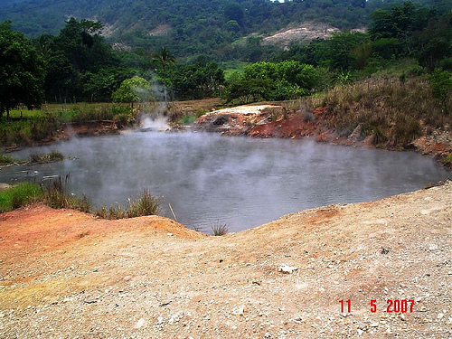

Ahuachapán es un departamento de El Salvador, que se encuentra ubicado en la zona occidental del país, cerca de las costas salvadoreña.
Su extensión territorial es de 1,239.06 km2; su cabecera departamental es el municipio de Ahuachapán
El departamento posee una población aproximada de 286,140 habitantes y se ubica a una altura de 785 metros de altura sobre el nivel del mar.
Su fundación como departamento de El Salvador se llevó a cabo el 9 de febrero de 1869, por decreto legislativo del presidente Francisco Dueñas. Además de ello consta de dos distritos o partidos: el de Ahuachapán y el de Atiquizaya, instituidos por las leyes del 4 de Julio de 1832 y del 26 de febrero de 1869, respectivamente.
Ahuachapán es un nombre de origen nahuatl que significa: “Ciudad de la casa de los robles”.
Ahuachapán limita al norte y oeste con la República de Guatemala, al noreste con el departamento de Santa Ana, al este con el de Sonsonate y al sur presenta una franja de costa que se abre al Océano Pacífico.
| Info 1 | Info 2 |
|---|---|
 |
Esta hermosa iglesia de estilo colonial es amplia, con hermosos detalles de madera y figuras estampadas con representaciones religiosas como el Cristo resucitado, también al Corazón de Jesús y de María, éste último rodeado circularmente por doce estrellas que simbolizan las bíblicas doce tribus de Israel. |
|  | En las inmediaciones de la ciudad de Ahuachapán, en una área de 20 kilómetros cuadrados, se encuentran los ausoles o fumarolas del mismo nombre que constituyen uno de los fenómenos más interesantes del volcanismo en Centro América. Los ausoles ahuachapanecos se abren paso entre un depósito de rocas feldespáticas, los principales ausoles son: El Zapote a 5 kilómetros al sureste; antiguamente era un cráter de 20 metros de diámetro. |